Students choose an animal — bear, eagle, fish, or butterfly — trace and cut it from colorful cardstock, punch holes with stencils, and snap LEGO bricks through the holes to decorate it. An optional LED paper circuit makes the animal glow. This 90-minute field trip uses Brown Dog Gadgets LEGO Hole Punch Stencils and introduces engineering design, materials science, and simple circuits.
Schedule This Field TripIntroduction & Safety
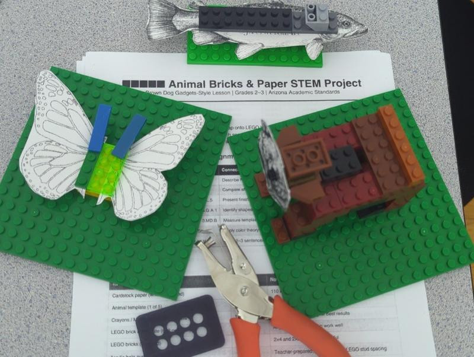
Young engineers build colorful animal shapes from paper and LEGO bricks, and some add a glowing LED light. Students choose an animal: Bear, Eagle, Fish, or Butterfly. They use a hole punch stencil to punch holes in cardstock paper, then snap LEGO bricks through the holes.
Safety Rules
- Scissors safety: Always cut away from your body.
- Hole punch safety: Keep fingers away from the punching area.
- LEGO bricks: Do not put LEGO bricks in your mouth, nose, or ears.
- Batteries: The small coin battery (CR2032) must NEVER go in your mouth.
- LED lights: Do not look directly into a lit LED.
- Maker Tape: The copper tape is sticky — only put it on your paper project.
- 3D-printed parts: Be gentle — they can break if bent too hard.
- Respect: Share tools and bricks. Clean up when done.
Materials
| Material | What it is for |
|---|---|
| Cardstock paper (colorful) | The body of your animal |
| Hole punch stencils | Guides for where to punch LEGO-sized holes |
| Hole punch tool | Punches clean holes in the paper |
| LEGO bricks (assorted) | Snap into the holes to decorate your animal |
| 3D-printed special shapes | Custom pieces like bear ears, eagle wings, fish fins |
| Scissors | Cut out your animal shape |
| Animal template printouts | Trace the animal outline onto cardstock |
| (Optional) CR2032 coin battery | Powers the LED light |
| (Optional) LED light | Makes your animal glow! |
| (Optional) Maker Tape (copper tape) | Conductive tape that carries electricity to the LED |
Watch the video: How LEGO Hole Punch Stencils work (Brown Dog Gadgets)
Arizona Educational Standards
This field trip project aligns with the following Arizona Science Standards for 2nd grade.
Physical Sciences
2.P1U1.1: Plan and carry out an investigation to determine that matter has mass, takes up space, and is recognized by its observable properties. Students observe and describe the properties of the materials they use: cardstock (stiff, flat, colorful), LEGO bricks (plastic, hard, snap-fit), copper tape (sticky, conductive, thin), and batteries (small, round, metal).
Life Sciences
2.L2U1.9: Obtain, evaluate, and communicate information about how animals obtain and use their senses to guide their behavior. Students choose an animal (bear, eagle, fish, butterfly) and discuss its body parts and how those parts help the animal survive.
Engineering Design (K-2)
K-2-ETS1-1: Ask questions, make observations, and gather information about a situation to define a simple problem. Students identify the problem: How can we make a flat paper animal more interesting and 3D?
K-2-ETS1-2: Develop a simple sketch, drawing, or physical model to illustrate how the shape of an object helps it function. Students select an animal template and plan which LEGO bricks go where. The finished animal IS the physical model.
Technology
Students use hole punches, stencils, LEGO bricks, 3D-printed components, and optionally electronic components (battery, LED, copper tape) to create a finished project.
Sources: Arizona Science Standards (ADE) and NGSS K-2 Engineering Design
Sample 2nd–3rd Grade Lesson Plan
This 90-minute lesson plan is designed to be led by a classroom teacher before and after the STEAMSPACE field trip, or by the field-trip facilitator during the visit. It includes a warm-up, six time-phased activity blocks, standards alignment, differentiation ideas, and an assessment rubric.
Lesson Overview
| Phase | Time | What students do |
|---|---|---|
| 1. Warm-Up & Animal Brainstorm | 10 min | Look at photos of real animals, name body parts, and choose which animal to build. |
| 2. Template, Trace & Cut | 15 min | Trace the animal template onto cardstock, then cut it out carefully. |
| 3. Stencil & Punch | 15 min | Line up the hole-punch stencil and punch LEGO-sized holes. |
| 4. Build with LEGO | 20 min | Snap LEGO bricks and 3D-printed pieces into the holes to decorate the animal. |
| 5. Add a Light (optional) | 20 min | Plan and tape a simple paper circuit with Maker Tape, LED, and battery. |
| 6. Reflect & Share | 10 min | Share the animal, answer discussion questions, and complete the exit ticket. |
Total time: 90 minutes
Detailed Phase Descriptions
Phase 1 — Warm-Up & Animal Brainstorm (10 min)
- Show photos of a bear, eagle, fish, and butterfly. Ask: "What body parts help this animal survive?"
- Record student ideas on the board: wings help eagles fly, fins help fish swim, legs help bears walk, etc.
- Let each student choose one animal to build and gather that template and stencil.
Phase 2 — Template, Trace & Cut (15 min)
- Place the animal template on top of a piece of colorful cardstock.
- Trace the outline with a pencil.
- Use scissors to cut around the outline. Remind students to cut away from their bodies.
- Check that the cut-out looks like the animal before moving on.
Phase 3 — Stencil & Punch (15 min)
- Place the matching hole-punch stencil on top of the cut-out so the edges align.
- Use the hole-punch tool to press a clean hole at each marked spot.
- Count the holes: bear 8, eagle 9, fish 7, butterfly 7.
- Gently push out any paper circles left behind.
Phase 4 — Build with LEGO (20 min)
- Sort LEGO bricks by color and size.
- Plan where each color will go before snapping any pieces in.
- Snap the studs through the holes from front to back.
- Add 3D-printed special pieces last, handling them gently.
- Hold the animal up and gently shake it to make sure pieces stay attached.
Phase 5 — Add a Light (optional) (20 min)
- Decide where the LED will show on the animal (eye, nose, body center).
- Flip the animal over. Build the circuit on a small piece of cardstock taped to the back.
- Run Maker Tape from the battery + side to the LED long leg.
- Run a second piece of Maker Tape from the battery – side to the LED short leg.
- Press the LED legs against the tape and check that it lights up.
Phase 6 — Reflect & Share (10 min)
- Students hold up their animals and explain one choice they made.
- Ask: "What was tricky? How did you fix it? What would you change next time?"
- Have students complete a quick exit ticket: "Name one material you used and one property of that material."
Standards Alignment
2nd Grade Science
- 2.P1U1.1: Matter has mass, takes up space, and is recognized by its observable properties. Students describe cardstock, LEGO bricks, copper tape, and batteries by color, texture, flexibility, and hardness.
- 2.L2U1.9: Animals use their senses to guide behavior. Students connect animal body parts (wings, fins, legs) to how the animal survives.
- K-2-ETS1-1: Ask questions and gather information to define a simple problem. Students identify how to make a flat paper animal more interesting and 3D.
- K-2-ETS1-2: Develop a simple model to show how shape helps function. The finished animal is the physical model.
3rd Grade Science
- 3.L1U1.5: Obtain, evaluate, and communicate information about animal structures and functions. Students describe how specific parts (beak, wings, fins) help the animal survive, grow, and reproduce.
- 3.L2U1.6: Plants and animals have traits that help them survive. Students compare animal adaptations across bear, eagle, fish, and butterfly.
- 3.P2U1.1: Demonstrate that light travels in a straight line until it is reflected. Students observe the LED light and discuss how the straight copper tape carries energy to the LED.
- 3-5-ETS1-1: Define a simple design problem reflecting a need or want. Students define how to make their animal recognizable, sturdy, and colorful.
Differentiation Strategies
| Need | Support |
|---|---|
| Fine-motor challenges | Pre-cut some animal shapes; use larger hole-punch grips or snap bricks together first. |
| Advanced learners | Challenge them to combine two animals, add more LED lights, or design a custom stencil. |
| English-language learners | Provide picture vocabulary cards for animal body parts and color words; pair with a peer helper. |
| Students who finish early | Invite them to help a partner, build a second animal, or write a short "How-To" card for their build. |
| Visual impairments or attention needs | Use high-contrast cardstock and clearly labeled bins; reduce background noise during instructions. |
Assessment Rubric
| Criteria | 4 — Exceeds | 3 — Meets | 2 — Approaching | 1 — Beginning |
|---|---|---|---|---|
| Animal is cut and assembled neatly | Animal is cut smoothly, all holes punched, LEGO pieces secure, and 3D pieces attached. | Animal is cut out, holes punched, and LEGO pieces mostly secure. | Animal is mostly cut out but some holes are missing or pieces are loose. | Animal is incomplete or pieces fall off easily. |
| Uses materials correctly and safely | Uses scissors, hole punch, and LEGO pieces safely; helps peers follow safety rules. | Uses all tools safely with no reminders. | Needs 1–2 reminders about safe tool use. | Needs frequent reminders or misuses tools. |
| Explains animal structures and functions | Clearly explains how at least two body parts help the animal survive. | Explains how one body part helps the animal survive. | Names body parts but connection to survival is unclear. | Cannot name relevant body parts. |
| Completes the design process | Plans, builds, tests, and improves the design independently. | Plans, builds, and tests with teacher support. | Builds but skips planning or testing. | Does not complete the build. |
| Reflects and shares learning | Shares detailed ideas and asks thoughtful questions during reflection. | Shares one idea and listens to peers. | Shares with prompting. | Does not participate in sharing. |
Sources: Arizona Science Standards (ADE) and NGSS K-2/3-5 Engineering Design
Choose Your Animal
Each animal has a cardstock template you will trace and cut out, and a hole punch stencil that shows you where to punch holes for LEGO bricks.
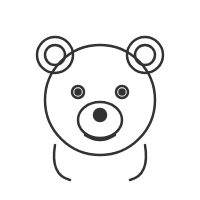
Bear
Body parts: Round head, two ears, body, four legs
LEGO idea: Use brown/tan bricks for the body. 3D-printed round ears snap on top.
Fun fact: Bears have an amazing sense of smell, 7 times better than a dog!
Hole punch spots: 4 on the body, 2 on the head, 2 on the ears
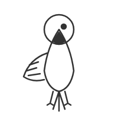
Eagle
Body parts: Body, two large wings, tail, head with beak
LEGO idea: Use white bricks for the head, brown for the body. 3D-printed wing shapes.
Fun fact: Eagles can see fish in the water from high up in the sky!
Hole punch spots: 3 on each wing, 2 on the body, 1 on the tail
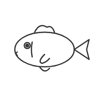
Fish
Body parts: Oval body, tail fin, top fin, side fins
LEGO idea: Use blue or orange bricks. 3D-printed curved fins for the tail.
Fun fact: Fish use their fins to steer and stop, just like a boat rudder!
Hole punch spots: 4 on the body, 2 on the tail, 1 on the top fin
Butterfly
Body parts: Two wings (left and right), small body in the middle, antennae
LEGO idea: Use bright colors: yellow, purple, pink! 3D-printed wing shapes with patterns.
Fun fact: Butterflies taste with their feet!
Hole punch spots: 3 on each wing, 1 on the body
Steps to Get Started
- Pick your animal: bear, eagle, fish, or butterfly.
- Get the template from your teacher.
- Trace it onto a piece of colorful cardstock.
- Cut it out carefully with scissors. Cut away from your body!
- Get your hole punch stencil and place it on top of your cut-out.
Color Ideas
| Animal | Cardstock Color | LEGO Brick Colors |
|---|---|---|
| Bear | Brown or tan | Brown, dark brown, tan |
| Eagle | White or light gray | White, brown, yellow (beak) |
| Fish | Blue or orange | Blue, orange, yellow, green |
| Butterfly | Any bright color | Pink, purple, yellow, teal |
Templates and stencils based on Brown Dog Gadgets LEGO Hole Punch Stencils.
Build Your LEGO Animal
Now for the fun part: let us bring your animal to life with LEGO bricks!
Step 1: Line Up the Template
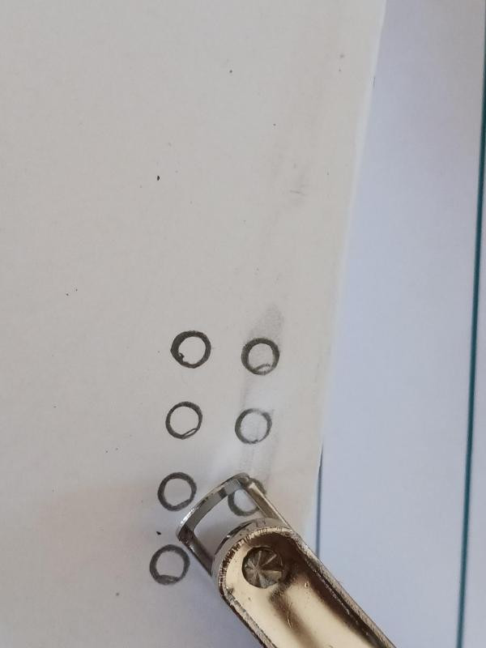
Take the template that matches your animal. Line it up carefully on top of your cut-out cardstock animal. Make sure the edges of the stencil align with the edges of your animal shape. Hold it steady with one hand, or use a paperclip to hold it in place.
Step 2: Draw the Circles
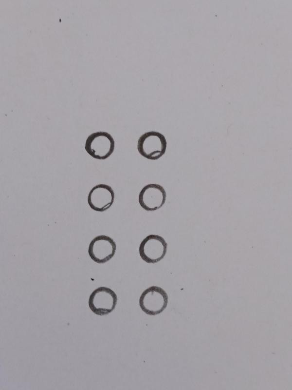
Using your template, draw circles on all the marked spots. Each circle shows where a LEGO stud will go through the paper.
Step 3: Punch the Holes
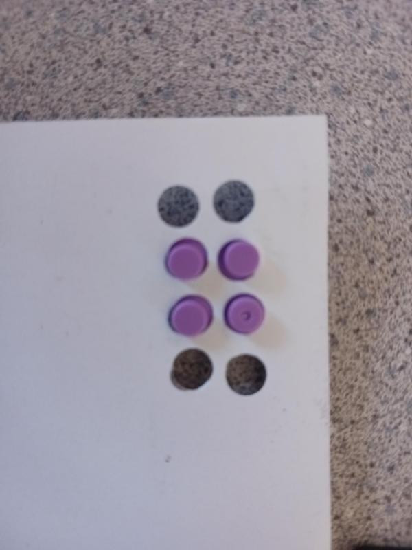
Take your hole punch tool. Find each marked spot on the stencil. Press the hole punch firmly to create a clean hole. Repeat for every marked spot on your stencil.
| Animal | Number of Holes |
|---|---|
| Bear | 8 (4 body, 2 head, 2 ears) |
| Eagle | 9 (3 per wing, 2 body, 1 tail) |
| Fish | 7 (4 body, 2 tail, 1 top fin) |
| Butterfly | 7 (3 per wing, 1 body) |
Step 4: Choose Your LEGO Bricks
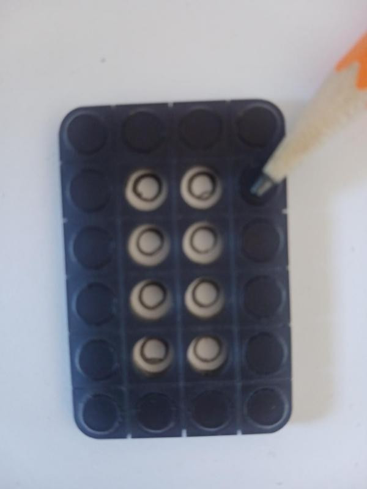
Look at the holes you punched. Each hole fits a standard LEGO stud. Pick out LEGO bricks in colors that match your animal. Lay them out next to your animal to plan your design.
Step 5: Snap the Bricks In
Take a LEGO brick and line up its stud with a hole in the cardstock. Press gently but firmly. The brick should snap through the hole and grip the paper. Continue snapping bricks into all the holes.
Tip: If a hole is too tight, gently wiggle the brick as you press. Do not force it.
Step 6: Add 3D-Printed Special Pieces
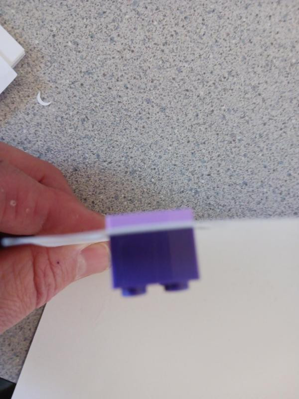
Some special shapes are 3D printed: bear ears, eagle wing tips, fish fins, or butterfly antennae. These pieces fit perfectly into the cardstock holes, just like regular LEGO bricks. Be gentle: 3D-printed pieces can be more fragile than regular LEGO bricks.
Check Your Work
- All holes have bricks or 3D-printed pieces in them
- Your animal stands up or lies flat without bricks falling off
- Your animal looks like the animal you chose!
Think Like an Engineer: Engineers test and improve their designs. Ask yourself: Does my animal look the way I want it to? Would different colored bricks make it look better?
Add a Light! (Optional)
Want to make your animal glow? Let us add a simple LED paper circuit! This step is optional — your animal is already awesome without it.
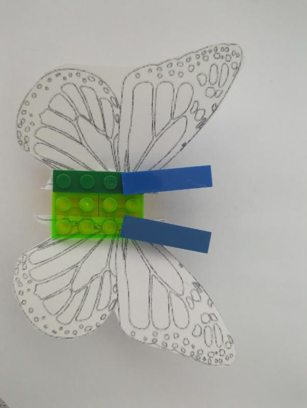
What You Need
| Part | What it does |
|---|---|
| CR2032 coin battery | Powers the light (3 volts) |
| LED light (any color) | The glowing part! |
| Maker Tape (copper tape) | Carries electricity like a wire |
| Small piece of cardstock | Backing for the circuit |
How a Circuit Works
Electricity flows in a circle (a circuit!). Electricity starts at the battery (the + side), flows through the copper tape (like a wire), reaches the LED light and makes it glow, then flows back through more copper tape to the battery (the - side). If the circle is broken, the light goes out. If the circle is complete, the light stays on!
Step-by-Step: Build Your Circuit
Step 1: Plan Where the Light Goes. Bear: the nose or eyes. Eagle: the eye. Fish: the eye or a glowing spot on the body. Butterfly: the body or center of a wing. Flip your animal over — the circuit goes on the back so you do not see the tape.
Step 2: Place the Battery. Take a small piece of cardstock (about 2 inches square). Place the CR2032 battery + side up on the cardstock. Tape the battery down with a strip of Maker Tape across the top (+ side). Leave some tape hanging off — this is your positive (+) wire.
Step 3: Add the LED. Take your LED and spread the two legs apart slightly. Poke the long leg through the cardstock next to the battery + side. Bend the long leg so it touches the positive Maker Tape strip. Tape the long leg down with more Maker Tape.
Step 4: Complete the Circuit. Take the short leg of the LED (the negative side). Bend it down and run a strip of Maker Tape from the short leg to the bottom (- side) of the battery. Make sure the tape touches both the LED leg AND the bottom of the battery. Press everything flat and your LED should light up!
Step 5: Attach to Your Animal. If the LED lights up, tape the circuit cardstock to the back of your animal. The LED should poke through to the front and shine from your animal's face or body.
Troubleshooting: If the LED does not light up, check: Is the long leg connected to +? Is the short leg connected to -? Is there a gap in the copper tape? Is the battery dead?
Circuit design from Brown Dog Gadgets: Getting Started with Paper Circuits.
Example Projects

LEGO Bear
Completed bear with brown and tan bricks on a green baseplate.
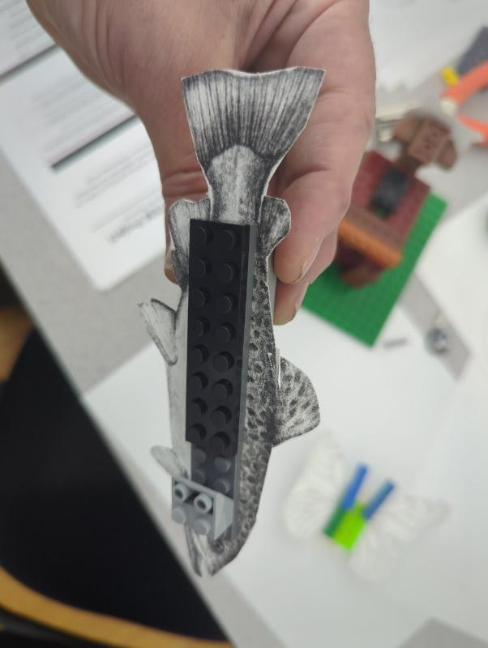
LEGO Fish
Fish paper cutout with LEGO plate attached, ready for decoration.
LEGO Butterfly
Paper butterfly with bright LEGO brick body and wings.
Reflect & Share
You built an amazing animal today! Now let us think about what we learned and share our creations with each other.
Discussion Questions
- What animal did you build? Why did you choose it?
- What materials did you use? Can you name three properties of the cardstock?
- How did the hole punch stencil help you? What would happen without it?
- What was the hardest part? What was the easiest part?
- If you added an LED: What made the light turn on? What would make it turn off?
- How are your animal body parts like the real animal? (Wings for flying, fins for swimming, legs for walking…)
- If you could build this again, what would you do differently?
- What other animals would you like to build? What LEGO shapes would you need?
What Did We Learn Today?
- Materials have properties: Cardstock is stiff, LEGO bricks are hard plastic, copper tape is thin and sticky.
- Engineering design: We followed steps — plan, build, test, improve.
- Tools help us: Stencils guide where to punch, hole punches make clean holes.
- 3D printing: Special shapes can be designed and printed for specific projects.
- Circuits (optional): Electricity flows in a circle — battery, tape, LED, tape, battery.
- Animals have structures: Body parts help animals survive (wings fly, fins swim, legs walk).
Great Job, Engineers! You combined art, engineering, and science to create something amazing. That is what we do at Steamspace!
Full lesson plans, worksheets, and media are also available in the Steamspace Moodle course.